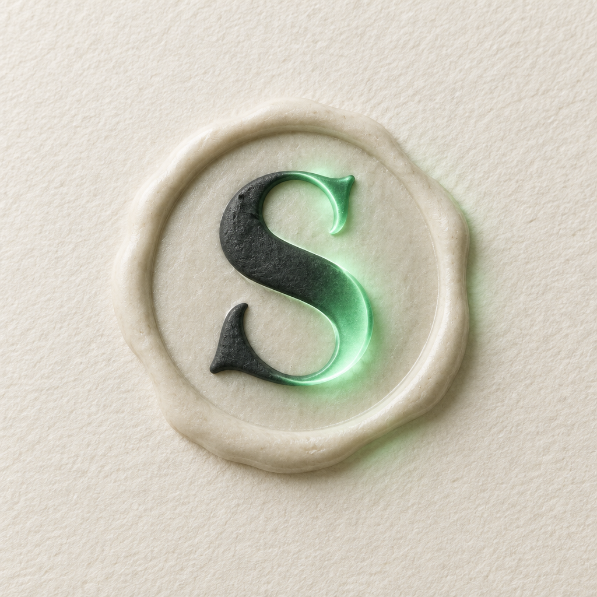
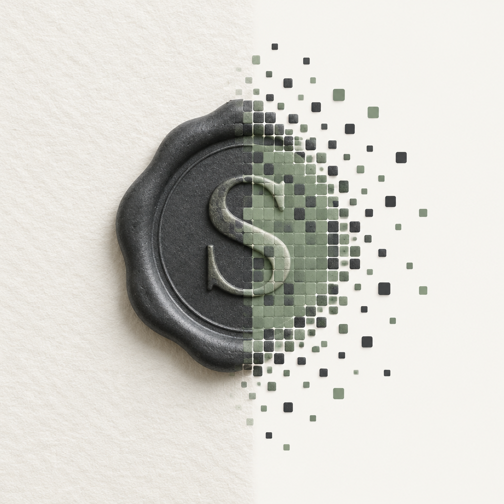
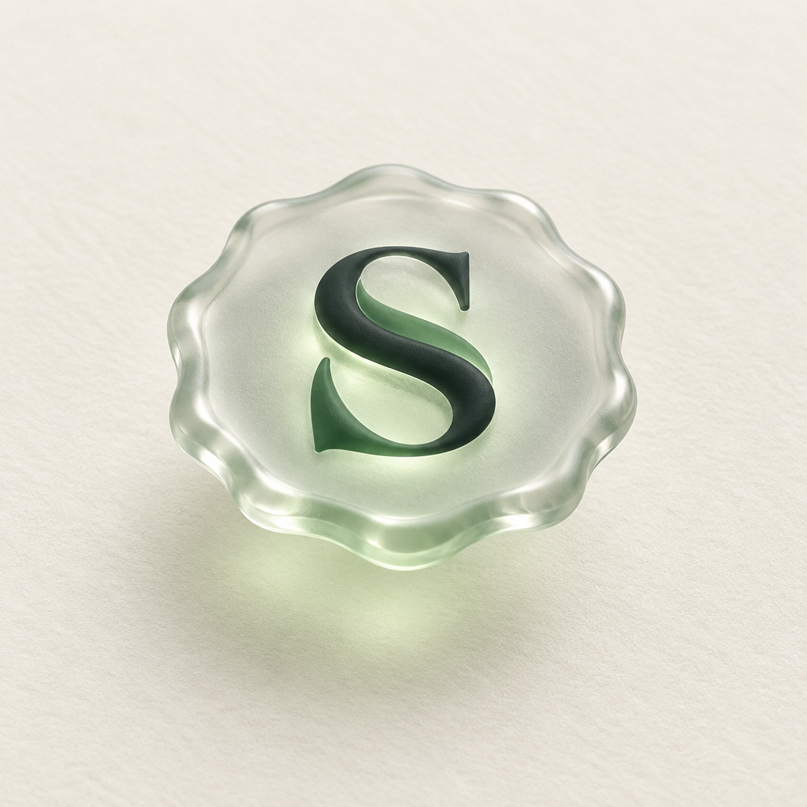
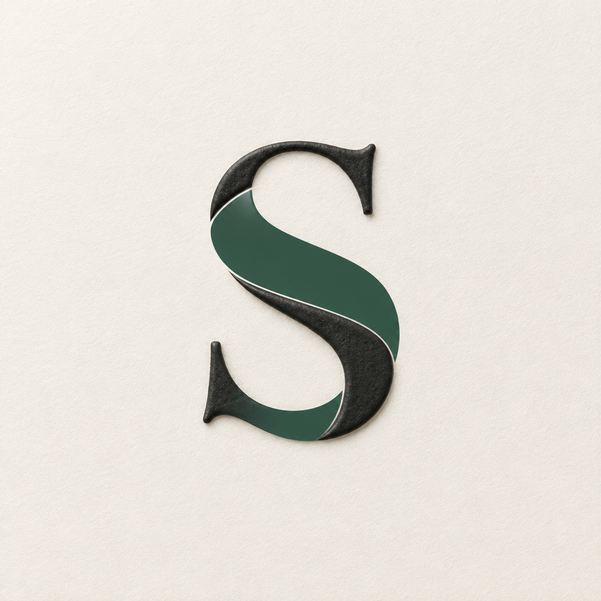

You liked the imprint but it read as purely physical. Four ways to let the digital side show through without losing the object. Same letter, same colours.

The person's stroke is real wax; the helper's stroke is sage light. The S is half object, half signal. Reads at any size and gives the "sealed" moment an obvious animation: the light stroke draws itself on.

The seal breaks apart into seal-tiles on the right. Literal "physical becomes data". Strong as a hero image or a transition, weaker as a standalone mark because it needs the whole width to tell the story.

The wax becomes frosted glass with the S lit from inside, floating over paper. Most "Apple" of the four, most futuristic. Loses the woven two-stroke idea unless we push it back in.

No seal border. The charcoal stroke is wax, the sage stroke is a flat screen-like layer laid on top. Cleanest as a logo, closest to a flat mark already, but the least "virtual" feeling of the four.